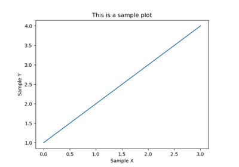

METplotpy
Contents:
This is an installation guide for METplotpy
This is the gallery of examples for METplotpy
General Examples
Sample Example
This is a sample plot
METplotpy
Docs
»
This is the gallery of examples for METplotpy
View page source
This is the gallery of examples for METplotpy
¶
General Examples
¶
Sample Example
¶
Some text here

This is a sample plot
¶
Gallery generated by Sphinx-Gallery